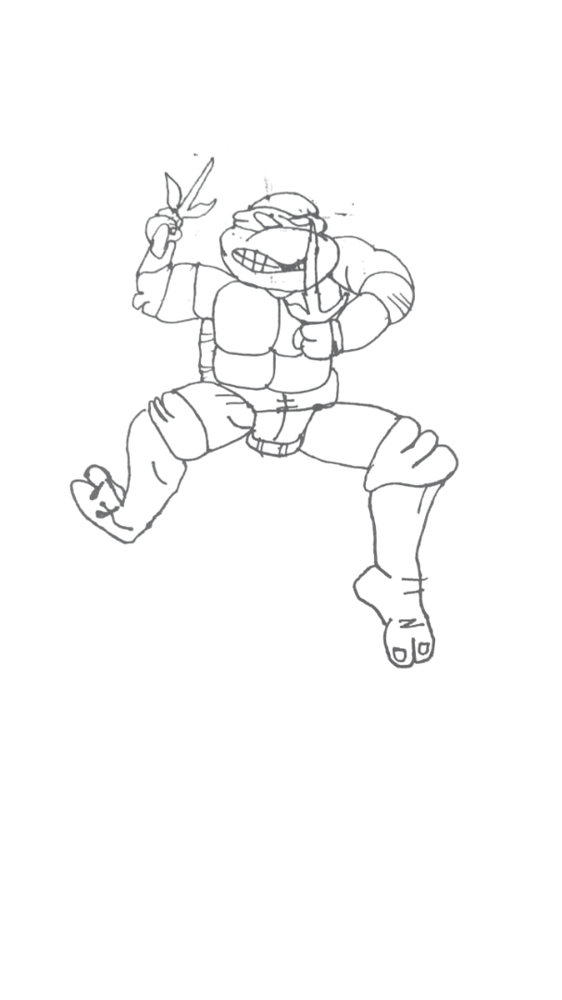

Привет! Я Карина, преподаватель немецкого языка.
Последние три года я помогаю взрослым студентам осваивать немецкий язык
и двигаться к своим целям — будь то подготовка к экзамену, улучшение
разговорных навыков или понимание сложных грамматических тем.
На занятиях я использую современные материалы и живую лексику,
опираясь на грамматическую основу.
Главное для меня — создать спокойную и поддерживающую атмосферу,
в которой можно говорить, ошибаться и учить новое без давления
и стресса.
Я уверена, что выучить язык может каждый, имея хорошую
и понятную цель :)
А я помогу пройти этот путь максимально комфортно.
